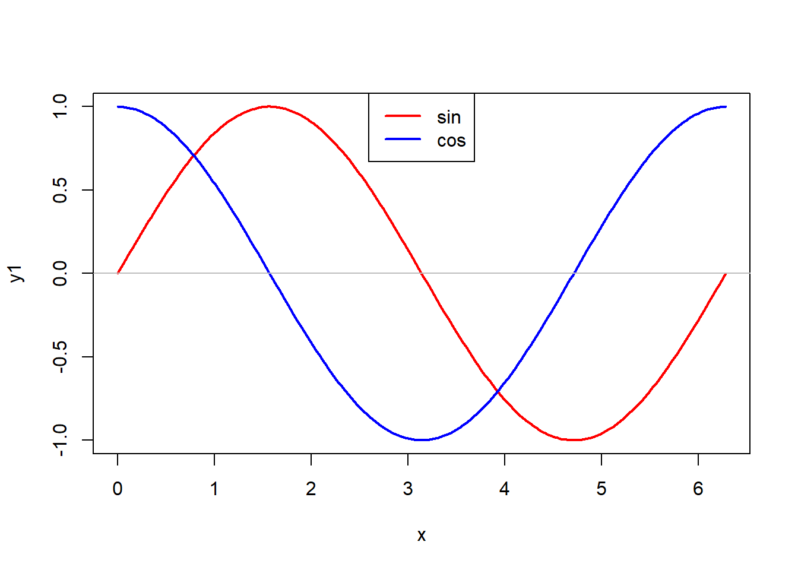
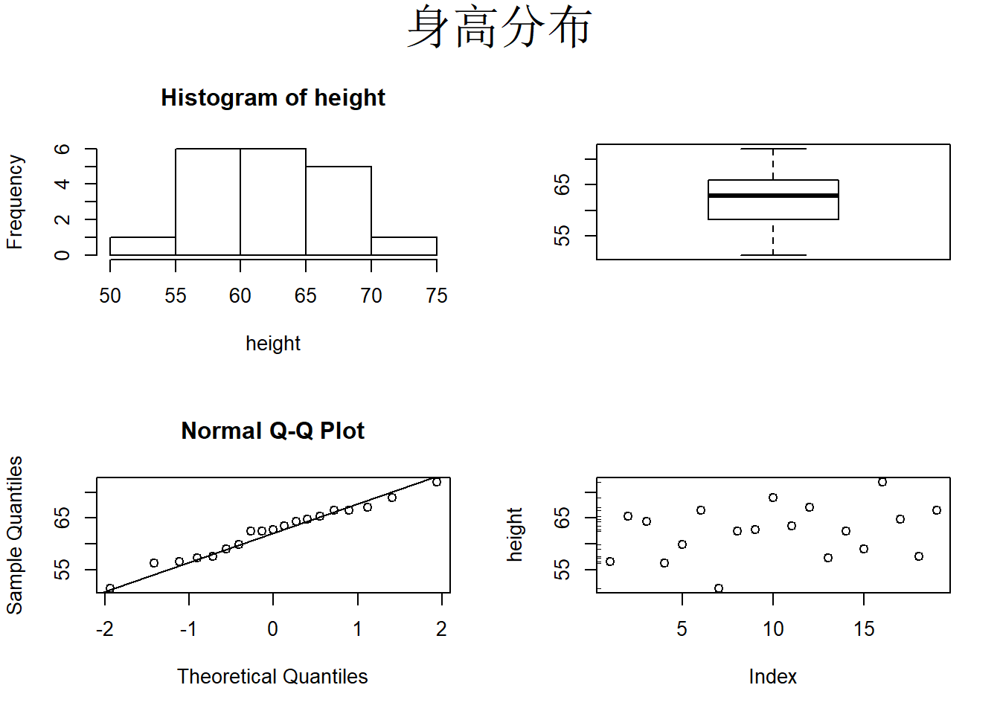

28 基本R绘图
R语言的前身是S语言， S语言的设计目的就是交互式数据分析、绘图。 所以绘图是R的重要功能。
R有最初的基本绘图， 这是从S语言继承过来的， 还有一些功能更易用、更强大的绘图系统， 如lattice、ggplot2。 基本绘图使用简单， 灵活性强， 但是为了做出满意的图形需要比较多的调整。 这里先讲解R语言的基本绘图功能。
R的基本绘图功能有两类图形函数：
高级图形函数， 直接针对某一绘图任务作出完整图形；
低级图形函数，在已有图形上添加内容。
具备有限的与图形交互的能力（函数locator 和identify）。
28.1 常用高级图形
28.1.1 条形图
d.cancer数据框包含了肺癌病人放疗的一些数据，
从cancer.csv读入：
## Parsed with column specification:
## cols(
## id = col_double(),
## age = col_double(),
## sex = col_character(),
## type = col_character(),
## v0 = col_double(),
## v1 = col_double()
## )统计男女个数并用条形图表示：
##
## F M
## 13 21可以增加标题，采用不同的颜色：
R函数colors()可以返回R中定义的用字符串表示的六百多种颜色名字。
如
## [1] "white" "aliceblue" "antiquewhite" "antiquewhite1"
## [5] "antiquewhite2" "antiquewhite3"下面的函数可以用来挑选颜色， 鼠标点击画出的颜色就可以挑选， 结果返回挑选出的颜色名：
select.colors <- function(){
nc <- length(colors())
x <- rep(seq(26), 26)[1:nc]
y <- rep(seq(26), each=26)[1:nc]
cols <- colors()
plot(x, y, type="p", pch=16, cex=2,
col=cols)
res <- cols[identify(x,y, labels=cols)]
res
}用width选项与xlim选项配合可以调整条形宽度，如
按性别与病理类型交叉分组后统计频数，结果称为列联表：
## type
## sex 鳞癌 腺癌
## F 4 9
## M 18 3用分段条形图表现交叉分组频数， 交叉频数表每列为一条：

用并排条形图表现交叉分组频数， 交叉频数表每列为一组：
增加标题，指定颜色，调整图例位置，调整条形宽度：
28.1.2 直方图和密度估计图
用hist作直方图以了解连续取值变量分布情况。
例如，下面的程序模拟正态分布数据并做直方图：
## [1] 99.97 100.08 99.80 101.57 102.29 98.88 101.85 98.54 98.70 97.87
## [11] 99.17 99.54 100.25 100.22 101.47 101.93 98.63 100.37 99.64 99.71
## [21] 101.54 101.23 100.12 98.98 100.83 102.25 98.98 100.57 99.39 99.98可以用main=、xlab=、ylab=等选项，
可以用col=指定各个条形的颜色，如：
函数density()估计核密度。
下面的程序作直方图，
并添加核密度曲线：
28.1.3 盒形图
盒形图可以简洁地表现变量分布，如
其中中间粗线是中位数， 盒子上下边缘是\(\frac{3}{4}\)和\(\frac{1}{4}\)分位数， 两条触须线延伸到取值区域的边缘。
盒形图可以很容易地比较两组或多组，如
也可以画若干个变量的并排盒形图，如
28.1.4 正态QQ图
用qqnorm和qqline作正态QQ图。
当变量样本来自正态分布总体时，
正态QQ图的散点近似在一条直线周围。
QQ图一般作法如下： 设有\(n\)个观测\(y_1\), \(y_2\), , \(y_n\), 并已从小到大排列, 则\(y_i\) 是总体的\(i/n\)分位数的估计, 设\(x_i\) 是标准正态分布的\(i/n\)分位数, 则在样本来自正态\(N(\mu, \sigma^2)\) 的情况下, 记\(N(\mu, \sigma^2)\) 的分布函数为\(F(x)\)， 有\(y_i \approx F^{-1}(\frac{i}{n})\), \(F(y_i)=\Phi(\frac{y_i-\mu}{\sigma}) \approx \frac{i}{n}\), \(\frac{y_i-\mu}{\sigma} \approx \Phi^{-1}(\frac{i}{n}) = x_i\), \(y_i \approx \mu + \sigma x_i\)， 于是用\((x_i, y_i)\) (\(i=1, 2, \ldots, n\))作为坐标画散点图应该近似呈现为截距\(\mu\)、 斜率 \(\sigma\) 的一条直线。
但是, 上述的近似有一个小缺点: \(y_1\) 是观测到的最小值, 对应于\(1/n\)分位数, \(y_n\)是观测到的最大值, 却对应于 \(n / n = 100\%\) 分位数, 对最小和最大值的处理不对称, 相当于说总体分布不能超过\(y_n\), 这是不合理的。 所以在实际画正态QQ图时, \(y_i\)不是对应于标准正态的\(i/n\)分位数而是对应于略调整的如\((i-0.375)/(n+0.25)\)这样的分位数, 这种做法叫做连续性修正。 这时, \(y_1\)对应于\(\frac{0.625}{n+0.25}\)分位数而 \(y_n\)对应于\(1 - \frac{0.625}{n+0.25}\)分位数, 两边各留了\(\frac{0.625}{n+0.25}\)。
下面的程序模拟正态分布随机数，并作正态QQ图:
下面的程序模拟对数正态数据，并作正态QQ图:
28.1.5 散点图
以d.class数据为例，
有name, sex, age, height, weight等变量。
从class.csv读入：
## Parsed with column specification:
## cols(
## name = col_character(),
## sex = col_character(),
## age = col_double(),
## height = col_double(),
## weight = col_double()
## )体重对身高的散点图：
用with()函数简化数据框变量访问格式:
在plot()函数内用main参数增加标题， 用xlab参数指定横轴标注，
用ylab参数指定纵轴标注，如
用pch参数指定不同散点形状，用col参数指定颜色，
用cex参数指定大小，如：
用气泡大小表现第三维（年龄）：
with(d.class,
plot(height, weight,
pch=16, col='blue',
cex=1 + (age - min(age))/(max(age)-min(age))))用气泡大小表现年龄， 用颜色区分性别：
with(d.class,
plot(height, weight,
main='体重与身高关系',
xlab='身高', ylab='体重',
pch=16,
col=ifelse(sex=='M', 'blue', 'red'),
cex=1 + (age - min(age))
/(max(age)-min(age))))用pairs()函数可以做散点图矩阵：
28.1.6 曲线图
curve()函数接受一个函数，
或者一个以x为变量的表达式，
以及曲线的自变量的左、右端点，
绘制函数或者表达式的曲线图，如：
又如：
在plot函数中使用 type=’l’参数可以作曲线图， 如
除了仍可以用main, xlab, ylab, col等参数外，
还可以用lwd指定线宽度， lty指定虚线，如
多条曲线，
可以用matplot()函数。例如
28.1.7 三维图
用persp函数作三维曲面图, contour作等值线图， image作色块图。
坐标x和y构成一张平面网格，
数据z是包含z坐标的矩阵，每行对应一个横坐标， 每列对应一个纵坐标。
下面的程序生成二元正态分布密度曲面数据：
x <- seq(-3,3, length=100)
y <- x
f <- function(x,y,ssq1=1, ssq2=2, rho=0.5){
det1 <- ssq1*ssq2*(1 - rho^2)
s1 <- sqrt(ssq1)
s2 <- sqrt(ssq2)
1/(2*pi*sqrt(det1)) * exp(-0.5 / det1 * (
ssq2*x^2 + ssq1*y^2 - 2*rho*s1*s2*x*y))
}
z <- outer(x, y, f)作二元正态密度函数的三维曲面图、等高线图、色块图:

28.1.8 动态三维图
rgl包能制作动态的三维散点图与曲面图。
iris数据框包含了3种鸢尾花的各50个样品的测量值，
测量值包括花萼长、宽，
花瓣长、宽。
用rgl的plot3d()作动态三维散点图如下：
这个图可以用鼠标拖动旋转。
其中type="s"表示绘点符号是球体形状。
还可选"p"(点)、"l"(连线)、"h"(向z=0连线)。
可以用size=指定大小倍数（缺省值为3）。
用rgl的persp3d()函数作曲面图。
如
二元正态分布密度曲面：
x <- seq(-3,3, length=100)
y <- x
f <- function(x,y,ssq1=1, ssq2=2, rho=0.5){
det1 <- ssq1*ssq2*(1 - rho^2)
s1 <- sqrt(ssq1)
s2 <- sqrt(ssq2)
1/(2*pi*sqrt(det1)) * exp(-0.5 / det1 * (
ssq2*x^2 + ssq1*y^2 - 2*rho*s1*s2*x*y))
}
z <- outer(x, y, f)
persp3d(x=x, y=y, z=z, col='red')rgl也有低级图形函数支持向已有图形添加物体、文字等， 也支持并列多图。 适当设置可以在R Markdown生成的HTML结果中动态显示三维图。
28.2 低级图形函数
28.2.1 abline()
用abline函数在图中增加直线。 可以指定截距和斜率，
或为竖线指定横坐标(用参数v)， 为水平线指定纵坐标(用参数h)。
如
28.2.2 points()
用points函数增加散点，如：
28.2.3 lines()
用lines函数增加曲线，如：
28.2.4 图例
可以用legend函数增加标注，如
x <- seq(0, 2*pi, length=200)
y1 <- sin(x)
y2 <- cos(x)
plot(x, y1, type='l', lwd=2, col="red")
lines(x, y2, lwd=2, col="blue")
abline(h=0, col='gray')
legend(0, -0.5, col=c("red", "blue"),
lty=c(1,1), lwd=c(2,2),
legend=c("sin", "cos"))x <- seq(0, 2*pi, length=200)
y1 <- sin(x)
y2 <- cos(x)
plot(x, y1, type='l', lwd=2, col="red")
lines(x, y2, lwd=2, col="blue")
abline(h=0, col='gray')
legend('top', col=c("red", "blue"),
lty=c(1,1), lwd=c(2,2),
legend=c("sin", "cos"))
28.2.5 axis()
在plot()函数中用 axes=FALSE可以取消自动的坐标轴。
用box()函数画坐标边框。
用axis函数单独绘制坐标轴。
axis的第一个参数取1，2，3，4，
分别表示横轴、纵轴、上方和右方。
axis的参数at为 刻度线位置，labels为标签。
如
x <- c('一月'=15, '二月'=20,
'三月'=18, '四月'=22)
plot(seq(along=x), x, axes=FALSE,
type='b', lwd=3,
main='前四个月销售额',
xlab='', ylab='销售额')
box(); axis(2)
axis(1, at=seq(along=x), labels=names(x))R基本绘图支持少量的数学公式显示功能，如不用数学符号时：
x <- seq(0, 2*pi, length=200)
y1 <- sin(x)
plot(x, y1, type='l', lwd=2,
axes=FALSE,
xlab='x', ylab='')
abline(h=0, col='gray')
box()
axis(2)
axis(1, at=(0:4)/2*pi,
labels=c('0', 'pi/2', 'pi', '3pi/2', '2pi'))使用数学符号时：
x <- seq(0, 2*pi, length=200)
y1 <- sin(x)
plot(x, y1, type='l', lwd=2,
axes=FALSE,
xlab='x', ylab='')
abline(h=0, col='gray')
box()
axis(2)
axis(1, at=(0:4)/2*pi,
labels=c(0, expression(pi/2),
expression(pi), expression(3*pi/2),
expression(2*pi)))绘图中使用数学符号的演示：
28.2.6 text()
text()在坐标区域内添加文字。
mtext()在边空处添加文字。
如
with(d.class, plot(height, weight))
lm1 <- lm(weight ~ height, data=d.class)
abline(lm1, col='red', lwd=2)
a <- coef(lm1)[1]
b <- coef(lm1)[2]
text(52, 145, adj=0, '线性回归:')
text(52, 140, adj=0,
substitute(hat(y) == a + b*x,
list(a=round(coef(lm1)[1], 2),
b=round(coef(lm1)[2], 2))))
28.2.7 locator()和identify()
locator()函数在执行时等待用户在图形的坐标区域内点击并返回点击处的坐标。
可以用参数n指定要点击的点的个数。
不指定个数则需要用右键菜单退出。
这个函数也可以用来要求用户点击以进行到下一图形。
如
x <- seq(0, 2*pi, length=200)
y1 <- sin(x); y2 <- cos(x)
plot(x, y1, type='l',
col="red")
lines(x, y2, col="blue")
legend(locator(1), col=c("red", "blue"),
lty=c(1,1), legend=c("sin", "cos"))identify()可以识别点击处的点并标注标签，
格式为identify(x, y, labels)，
其中(x,y)给出可点击的点的坐标，
labels是每个点对应的标签，
点击那个点就在那个点旁边标对应的标签。
28.3 图形参数
用图形参数可以选择点的形状、颜色、线型、粗细、坐标轴做法、边空、一页多图等。
有些参数直接用在绘图函数内，如plot函数可以用
pch、col、cex、lty、 lwd等参数。
有些图形参数必须使用par()函数指定。
par函数指定图形参数并返回原来的参数值，
所以在修改参数值作图后通常应该恢复原始参数值，
做法如
opar <- par(mfrow=c(2,2))
with(d.class, {hist(height);
boxplot(height);
qqnorm(height); qqline(height);
plot(height); rug(height,side=2)})在函数内，可以在函数开头修改了图形参数后，
用on.exit()函数将恢复原始图形参数作为函数退出前必须完成的任务，如
f <- function(){
opar <- par(mfrow=c(2,2)); on.exit(par(opar))
with(
d.class,
{hist(height);
boxplot(height);
qqnorm(height); qqline(height);
plot(height); rug(height,side=2)
})
}
f()
28.3.1 例子：用图形参数解决barplot图形横坐标值过宽
barplot的横坐标标注太宽时，自动将某些标注省略。 用las=2指定坐标轴刻度标签垂直于坐标轴， 这样x轴的刻度值就变成了纵向的。 注意使用mar参数增加横坐标边空大小。 例如
f <- function(){
opar <- par(mar=c(8, 4, 2, 0.5)); on.exit(par(opar))
x <- 1:10
names(x) <- paste(10000000000 + (1:10))
barplot(x, las=2)
}
f()图形参数可以分为如下四类
- 图形元素控制；
- 坐标轴与坐标刻度；
- 图形边空；
- 一页多图。
28.3.2 图形元素控制
pch=16参数。散点符号，取\(0\sim 18\)的数。lty=2参数。线型，1为实线，从2开始为各种虚线。lwd=2参数，线的粗细，标准粗细为1。col="red"参数，颜色，可以是数字\(1\sim 8\)， 或颜色名字符串如"red"，"blue"等。 用colors()函数查询有名字的颜色。 用rainbow(n)函数产生连续变化的颜色。font=2参数，字体，一般font=1是正体,2是粗体, 3是斜体,4是粗斜体。adj=-0.1指定文本相对于给定坐标的对齐方式。 取0表示左对齐,取1表示右对齐,取0.5表示居中。 此参数的值实际代表的是出现在给定坐标左边的文本的比例。cex=1.5绘点符号大小倍数，基本值为1。
28.3.3 坐标轴与坐标刻度
mgp=c(3,1,0)坐标轴的标签、刻度值、坐标轴线 到实际的坐标轴位置的距离，以行高为单位。 经常用来缩小坐标轴所占的空间, 如mgp=c(1.5, 0.5, 0)。lab=c(5,7,12)提供刻度线多少的建议， 第一个数为x轴刻度线个数， 第二个数为y轴刻度线个数， 第三个数是坐标刻度标签的字符宽度。las=1坐标刻度标签的方向。 0表示总是平行于坐标轴, 1表示总是水平, 2表示总是垂直于坐标轴。tck=0.01坐标轴刻度线长度，以绘图区域大小为单位1。xaxs="s",yaxs="e": 控制x轴和y轴标刻度的方法。取
"s"(即standard)或"e"(即extended) 的时候数据范围控制在最小刻度和最大刻度之间。 取"e"时如果有数据点十分靠近边缘轴的范围会略微扩大。取值为
"i"（即internal）或"r"（此为缺省） 使得刻度线都落在数据范围内部,而"r"方式所留的边空较小。取值设为
"d"时会锁定此坐标轴, 后续的图形都使用与它完全相同的坐标轴, 这在要生成一系列可比较的图形的时候是有用的。 要解除锁定需要把这个图形参数设为其它值。
28.3.4 图形边空
一个单独的图由绘图区域(绘图的点、线等画在这个区域中)和包围绘图区域的边空组成, 边空中可以包含坐标轴标签、坐标轴刻度标签、标题、小标题等, 绘图区域一般被坐标轴包围。
边空的大小由mai参数或mar参数控制, 它们都是四个元素的向量, 分别规定下方、左方、上方、右方的边空大小, 其中mai取值的单位是英寸, 而mar的取值单位是文本行高度。 例如：
28.3.5 一页多图
R可以在同一页面开若干个按行、列排列的窗格, 在每个窗格中可以作一幅图。 每个图有自己的内边空, 而所有图的外面可以包一个“外边空”。
一页多图用mfrow参数或mfcol参数规定。
用oma指定四个外边空的行数。
用mtext加outer=T指定在外边空添加文本。
如果没有outer=T则在内边空添加文本。
如
opar <- par(mfrow=c(2,2),
oma=c(0,0,2,0))
with(d.class, {hist(height);
boxplot(height);
qqnorm(height); qqline(height);
plot(height); rug(height,side=2)})
mtext(side=3, text='身高分布', cex=2, outer=T)
28.4 图形输出
只要启用了高级绘图函数会自动选用当前绘图设备， 缺省为屏幕窗口。
28.5 包含多种中文字体的图形
为了使用MS Windows系统字体， 一种办法是安装showtext包。 该包替换画图时的添加文本函数命令， 把文本内容替换成多边形（PDF或PS图）或点阵（点阵图）。
需要的工作：
- 查看Windows的font目录内容，看文件名与字体名的对应关系。 下面的程序中的列表是我的中文Windows 10的部分中文字体。
- 找到自己希望使用的中文字体的文件名。
- 用font.add()命令，增加一套自定义字体family， 一套中可以指定四种：常规(regular), 粗体(bold), 斜体(italic), 粗斜体(bolditalic)
- 程序中调入showtext包并运行showtext.auto()命令，这个命令使得文本命令采用showtext包
- 用par(family=)指定自定义的字体family。
- 作图（主要是PDF）。关闭图形设备。
test.chinese <- function(){
require(showtext); showtext.auto()
## 建立文件名到字体名对照表
fmap <- c(
'msyh'='微软雅黑常规',
'msyhbd'='微软雅黑粗体',
'msyhl'='微软雅黑细体',
'simsun'='宋体',
'simfang'='仿宋',
'simkai'='楷体',
'simhei'='黑体',
'SIMLI'='隶书',
'SIMYOU'='幼圆',
'STSONG'='华文宋体',
'STZHONGS'='华文中宋',
'STFANGSO'='华文仿宋',
'STKAITI'='华文楷体',
'STXIHEI'='华文细黑',
'STLITI'='华文隶书',
'STXINGKA'='华文行楷',
'STXINWEI'='华文新魏',
'STCAIYUN'='华文彩云',
'STHUPO'='华文琥珀'
)
fmapr <- names(fmap); names(fmapr) <- unname(fmap)
cat('==== 字体文件名与字体名称对应:\n')
print(fmap)
cat('==== 字体名与字体文件名对应:\n')
print(fmapr)
## 找到某个字体的字体文件
## font.name是字体名称
find.font <- function(font.name){
fname <- fmapr[font.name]
flist0 <- font.files()
flist1 <- sapply(strsplit(flist0, '[.]'), function(it) it[1])
flist0[flist1==fname]
}
ff1 <- find.font('宋体')
ff2 <- find.font('黑体')
ff3 <- find.font('仿宋')
ff4 <- find.font('隶书');
font.add('cjk4',
regular=ff1,
bold=ff2,
italic=ff3,
bolditalic=ff4)
##browser()
pdf('test-chinese.pdf'); on.exit(dev.off())
par(family='cjk4')
plot(c(0,1), c(0,1), type='n',
axes=FALSE, xlab='', ylab='')
text(0.1, 0.9, '正体', font=1)
text(0.1, 0.8, '粗体', font=2)
text(0.1, 0.7, '斜体', font=3)
text(0.1, 0.6, '粗斜体', font=4)
}
test.chinese()注意：图形参数font=1表示正体， font=2表示粗体, font=3表示斜体, font=4表示粗斜体。
28.6 其它图形
28.6.1 相关系数图
用cor(x)可以计算数据框x的各列的相关系数阵。
corrgram包的corrgram()函数可以将相关系数阵用图形表示，
系数绝对值大小用色块颜色深浅表示，
正负用两种颜色区分。
例如， 计算iris数据框中四个测量值的相关系数并用矩阵表示：
## Registered S3 method overwritten by 'seriation':
## method from
## reorder.hclust gclus## Sepal.Length Sepal.Width Petal.Length Petal.Width
## Sepal.Length 1.00 -0.12 0.87 0.82
## Sepal.Width -0.12 1.00 -0.43 -0.37
## Petal.Length 0.87 -0.43 1.00 0.96
## Petal.Width 0.82 -0.37 0.96 1.00corrgram(
R.iris, order=TRUE,
lower.panel=panel.shade,
upper.panel = panel.pie,
text.panel = panel.txt
)左下方用颜色代表正负相关， 蓝色为正相关，红色为负相关， 可以看出花萼长(Sepal.Length)、花瓣宽(Petal.Width)和花瓣长(Petal.Length)相互为较强的正相关， 但是花萼宽与其它三个变量为负相关。 这个相关结果实际是虚假的， 因为样本不是单一总体而是来自三个总体。 图形右上方用阴影部分大小和颜色深度代表相关系数绝对值， 用颜色区分正负。